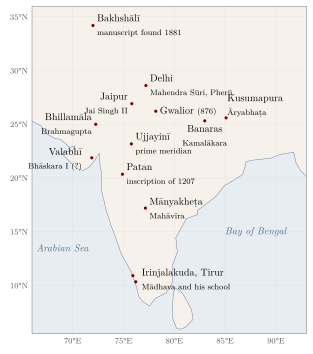

Chapter 1: Gaṇita: Mathematics in the Indian Tradition¶
Mahāvīra, Gaṇitasārasaṅgraha 1.16
bahubhir vipralāpaiḥ kiṃ trailokye sacarācare
yat kiṃcid vastu tat sarvaṃ gaṇitena vinā na hi
“What is the use of saying much? Whatever object there is in the three worlds, moving or unmoving, none of it exists apart from calculation.”
The Indian subcontinent produced one of the longest continuous written traditions of mathematics in the world. Its documents run from the cord-and-peg geometry of the Vedic altar manuals, composed in the first millennium BCE, through the astronomical treatises of Āryabhaṭa (499 CE) and Brahmagupta (628 CE), the arithmetic and algebra textbooks of Śrīdhara, Mahāvīra and Bhāskara II, and the infinite series of the Kerala school (fourteenth to sixteenth centuries), to the work of modern mathematicians such as Srinivasa Ramanujan. Some of its achievements—above all the decimal place-value numerals with a sign for zero—became part of the common inheritance of humanity. Others, such as the Kerala series or the solution of the indeterminate quadratic equation, were reached independently and by other methods in Europe much later, and were recognised as Indian only in the nineteenth and twentieth centuries.
This volume tells that history as accurately as the evidence allows. It tries to avoid two distortions that have long marked writing on the subject: the colonial-era view that Indian mathematics was a set of rules without reasons, borrowed in its best parts from the Greeks; and the more recent tendency to claim that ancient Indian texts “anticipated” everything from the calculus to set theory. The texts themselves are interesting enough. They show a tradition with its own questions, its own standards of explanation, and its own way of writing mathematics down (Plofker 2009; Datta and Singh 1935).
1.1 What Gaṇita Meant¶
The Sanskrit word gaṇita is a past participle of the root gaṇ, “to count”, and means literally “what has been counted”, hence “calculation”. In the classical period it covered all of what we would call mathematics, and it was also the name of the mathematical-astronomical branch of jyotiṣa, the science of the heavenly bodies. Indian authors divided the subject in several ways.
Definition: The Branches of Gaṇita
-
Pāṭīgaṇita or vyaktagaṇita (“board calculation”, “calculation with known quantities”): arithmetic and mensuration, worked on a board (pāṭī) covered with dust or sand. Śrīdhara’s Pāṭīgaṇita, Mahāvīra’s Gaṇitasārasaṅgraha and Bhāskara II’s Līlāvatī belong here.
-
Bījagaṇita or avyaktagaṇita (“seed calculation”, “calculation with unknown quantities”): algebra, including indeterminate equations.
-
Kṣetragaṇita (“field calculation”): geometry and mensuration of plane figures; together with excavations (khāta), piles (citi), sawing (krakaca) and shadows (chāyā) it formed the “determinations” (vyavahāra) of the arithmetic texts.
-
Golagaṇita: the mathematics of the sphere, used in astronomy.
Brahmagupta opens the mathematical chapter of his Brāhmasphuṭasiddhānta (628 CE) by saying that one who knows the twenty operations (parikarman: addition, subtraction, multiplication, division, squaring, square root, cubing, cube root, the reductions of fractions, the rules of proportion and so on) and the eight determinations (vyavahāra: mixtures, series, plane figures, excavations, piles, sawing, heaps of grain and shadows) is a calculator (gaṇaka). The same organisation, with variations, runs through all the later arithmetic texts (Plofker 2009; Colebrooke 1817). A Jain canonical text, the Sthānāṅga, lists ten topics of calculation (saṃkhyāna), which shows that the Jain community, too, treated mathematics as an organised body of knowledge at an early date (Datta 1929).
Mathematics in India was rarely pursued for its own sake alone. It served ritual geometry, astronomy and calendar-making, commerce, land measurement, architecture and, in the Jain tradition, cosmology. Yet the texts are full of problems that have no practical use at all—puzzles about bees and peacocks, numbers chosen for their beauty, rules extended far beyond any need—and their authors clearly took pleasure in the subject. Bhāskara II’s Līlāvatī became a classic as much for the charm of its verses as for its content.
1.2 A Timeline of Indian Mathematics¶
Table 1.1 gives the main landmarks discussed in this volume. Dates before about 500 CE are approximate, and several are disputed; the chapters give the evidence.
| Period | Date | Main developments |
|---|---|---|
| Vedic | c. 1500–500 BCE | Number words for powers of ten up to \(10^{12}\) in the Saṃhitās |
| Śulbasūtras | c. 800–200 BCE | Altar geometry: the diagonal rule, rational approximations to \(\sqrt{2}\), area-preserving transformations |
| Early Jain texts | last centuries BCE–early centuries CE | Classification of numbers into numerable, innumerable and infinite; large numbers |
| Piṅgala | c. 3rd–2nd c. BCE (uncertain) | Combinatorics of metres |
| Early place value | c. 3rd–7th c. CE | Word-numerals and written numerals with zero; Bakhshālī manuscript (dating disputed) |
| Classical siddhāntas | 499–c. 1150 CE | Āryabhaṭa, Bhāskara I, Brahmagupta, Lalla, Śrīpati, Bhāskara II: sine tables, kuṭṭaka, arithmetic of zero and negatives, bhāvanā and cakravāla |
| Arithmetic texts | c. 750–1150 CE | Śrīdhara, Mahāvīra, Śrīpati, Bhāskara II (Līlāvatī) |
| Later medieval | 12th–16th c. | Nārāyaṇa Paṇḍita (1356); Kerala school from Mādhava (c. 1340–1425) to Jyeṣṭhadeva (c. 1530) and Acyuta (d. 1621) |
| Early modern | 16th–18th c. | Persian translations of the Līlāvatī and Bījagaṇita; Sanskrit versions of Islamic astronomy and of Euclid; Jai Singh’s observatories |
| Modern | 19th c.–present | Rediscovery of the Kerala series; Ramanujan; modern research institutions |
1.3 Mathematics and Astronomy¶
For most of its history, advanced mathematics in India was written by astronomers. The jyotiṣa tradition recognised three branches: mathematical astronomy (gaṇita or tantra), divination from omens (saṃhitā) and horoscopy (horā). Mathematical astronomy was set out in three kinds of treatise:
-
the siddhānta, a comprehensive treatise computing from the beginning of a vast cosmic cycle, the kalpa (Brahmagupta’s Brāhmasphuṭasiddhānta, Bhāskara II’s Siddhāntaśiromaṇi);
-
the tantra, computing from the beginning of the current age (the Āryabhaṭīya is often classed as a tantra);
-
the karaṇa, a practical handbook using a recent epoch and simplified rules (Brahmagupta’s Khaṇḍakhādyaka, 665 CE).
Several of these works contain a chapter on pure mathematics: the Gaṇitapāda of the Āryabhaṭīya, chapters 12 and 18 of the Brāhmasphuṭasiddhānta, and the Līlāvatī and Bījagaṇita, which circulated as parts of, or companions to, Bhāskara II’s Siddhāntaśiromaṇi. Astronomical problems drove much of the mathematics: planetary positions required sines and interpolation, the reckoning of planetary cycles required the solution of linear indeterminate equations, and the computation of eclipses required spherical geometry. Trigonometry in particular was cultivated in India for astronomical purposes. The Indian half-chord or “sine” (jyā) replaced the Greek chord in Indian astronomy and passed, through Arabic, to medieval Europe (Chapter 12). The astronomy itself is treated in Volume 12 of this series, Khagola Jyotiṣa: Astronomy; here it appears only where it shaped the mathematics (Pingree 1981; Plofker 2009).
At the same time, a separate genre of arithmetic and mensuration texts developed, written for students, merchants, officials and surveyors as well as astronomers. The earliest surviving examples are the Bakhshālī manuscript, Śrīdhara’s Pāṭīgaṇita and Mahāvīra’s Gaṇitasārasaṅgraha (Chapter 10; the date of the Bakhshālī manuscript is discussed in Chapter 2).
1.4 How Mathematics Was Written¶
1.4.1 Verse rules and prose commentaries¶
Most Sanskrit mathematical texts are in verse. A rule (sūtra or karaṇasūtra) is stated in one or two verses, often in the āryā metre or in the anuṣṭubh śloka, and is followed by one or more example problems (udāharaṇa), also in verse. The rules are compressed to the point of obscurity, and they were meant to be memorised and then explained by a teacher. Prose commentaries (bhāṣya, vyākhyā, ṭīkā) supplied the explanation: they glossed the words, worked the examples, gave alternative methods, and often added a justification (upapatti, yukti, vāsanā) showing why the rule is correct. The earliest surviving mathematical commentary of this kind is Bhāskara I’s commentary on the Āryabhaṭīya (629 CE), studied in detail by Agathe Keller (Keller 2006).
Verse composition had practical advantages in a culture that valued memorisation, and the metre gave some protection against corruption, since a dropped or altered syllable usually breaks the verse. But the importance of writing should not be underestimated: the dust board and later paper were essential for calculation, and the texts survive because they were copied, over and over, on palm leaf, birch bark and paper. Thousands of mathematical and astronomical manuscripts are recorded in David Pingree’s Census of the Exact Sciences in Sanskrit (Pingree 1970).
1.4.2 Writing numbers in verse¶
A verse cannot easily contain a string of digits, so Indian authors developed ways of writing numbers as words.
Word-numerals (bhūtasaṃkhyā)
In the bhūtasaṃkhyā (“object-number”) system a digit is represented by the name of something conventionally associated with that number, and the digits are given in order of increasing place value, beginning with the units. Common equivalents include:
| Digit | Typical words |
|---|---|
| 0 | śūnya (void), kha, ākāśa, ambara (sky) |
| 1 | rūpa (form), candra, indu (moon), bhū (earth) |
| 2 | netra (eyes), bāhu (arms), pakṣa (wings), yama (twins) |
| 3 | agni, hutāśana (fire, of which there are three ritual fires), guṇa, loka, rāma |
| 4 | veda, yuga, samudra, abdhi (ocean) |
| 5 | bāṇa, śara (arrows of Kāma), bhūta (elements), indriya (senses) |
| 6 | rasa (tastes), ṛtu (seasons), aṅga (auxiliaries of the Veda) |
| 7 | aśva (horses of the Sun), muni, ṛṣi (sages), naga, parvata (mountains), svara (notes) |
| 8 | vasu (the Vasus), gaja (elephants of the quarters), nāga, ahi (serpents) |
| 9 | graha (planets), aṅka (digits), nanda (the nine Nandas) |
Thus agni-kha-netra, “fire–sky–eyes”, gives the digits 3, 0, 2 from the units upward and denotes \(203\). Because the system is positional and has a word for zero, its use shows that the idea of decimal place value was available to the writer (Chapter 7).
The kaṭapayādi system
In the kaṭapayādi system, used especially in Kerala and South India, each consonant stands for a digit. The four groups of consonants beginning with ka, ṭa, pa and ya each count from 1:
| 1 | 2 | 3 | 4 | 5 | 6 | 7 | 8 | 9 | 0 | |
|---|---|---|---|---|---|---|---|---|---|---|
| ka-group | ka | kha | ga | gha | ṅa | ca | cha | ja | jha | ña |
| ṭa-group | ṭa | ṭha | ḍa | ḍha | ṇa | ta | tha | da | dha | na |
| pa-group | pa | pha | ba | bha | ma | |||||
| ya-group | ya | ra | la | va | śa | ṣa | sa | ha |
Vowels standing alone count as zero; in a conjunct consonant only the last consonant counts; and, as with word-numerals, the digits are normally read from the units upward. Any number can thus be turned into a word or phrase that makes sense in Sanskrit. The system was used for astronomical constants, for Mādhava’s table of sines (Chapter 6) and, much later, for the names of the seventy-two parent scales (melakarta) of Karnatak music.
Āryabhaṭa used a third, quite different, alphabetic notation, described in Chapter 3.
1.5 Rules, Reasons and Upapatti¶
It was long said, especially in colonial-era writing, that Indian mathematics consisted of rules without proofs. The statement contains a grain of truth and a large error. The base texts do usually state rules without justification; that is a convention of the genre, not a sign that their authors could not justify them. The commentaries contain a great deal of argument. Bhāskara I explains why rules work by referring to diagrams and to earlier rules; Bhāskara II added his own vāsanā (explanations) to parts of the Siddhāntaśiromaṇi; Gaṇeśa Daivajña’s commentary on the Līlāvatī (Buddhivilāsinī, 1545) and Kṛṣṇa Daivajña’s commentary on the Bījagaṇita (c. 1600) give demonstrations of many rules (Chapter 5); and the Malayalam Yuktibhāṣā of Jyeṣṭhadeva (c. 1530) is a book of reasoned derivations for the Kerala school’s results, including the infinite series (Sarma et al. 2008; Srinivas 2005).
Indian upapatti differs from a Euclidean proof. It does not start from a list of axioms and deduce theorems in a fixed order. It typically justifies a computational rule by a geometric construction, by reduction to an already accepted rule (very often the rule of three or the theorem of the right triangle), or by an algebraic rearrangement. Where infinite processes are involved, as in the Yuktibhāṣā, the argument divides a quantity into many small parts and studies what happens as the parts become ever smaller. Such arguments can be reconstructed in modern terms, but they belong to their own tradition, and historians now study them on their own terms rather than measuring them against Euclid (Plofker 2009; Keller 2006).
Indian intellectual life also provided a general theory of knowledge, the doctrine of the means of valid knowledge (pramāṇa) developed by the Nyāya and other schools: perception, inference, comparison and authoritative testimony. Mathematical authors seldom refer to it explicitly. Their working standard was more practical: a rule was accepted if it gave correct results, could be checked by a reverse operation, and could be shown to follow from accepted principles. Several texts prescribe such checks; Bhāskara II, for example, asks the reader to verify answers by working backwards.
1.6 Number in Indian Philosophy¶
Indian philosophers discussed the nature of number, although their discussions had little direct contact with the work of the mathematicians. In the Vaiśeṣika system, number (saṃkhyā) is one of the qualities (guṇa) that inhere in substances. Unity belongs to each thing by itself; according to Praśastapāda (c. 6th century), duality and the higher numbers arise only when a perceiver relates several things to one another in an “enumerative cognition” (apekṣābuddhi), and they cease when that cognition ceases. The Nyāya school accepted this account, and later Navya-Nyāya logicians analysed number words and numerical cognition with great subtlety. Buddhist philosophers, who rejected real qualities and universals, treated number as a conceptual construction rather than a property of things.
These debates concern what number is, and they have their own interest for the history of philosophy. The mathematicians, for their part, rarely discussed the nature of their objects: their concern was how to calculate correctly. It is sometimes suggested that philosophical ideas such as the Buddhist doctrine of emptiness (śūnyatā) or the Jain doctrine of many-sidedness (anekāntavāda) shaped Indian mathematics—for instance by making it easier to accept zero, negative numbers or infinity. Such suggestions are possible but unproven, since the mathematical texts do not refer to these doctrines (Chapter 7).
1.7 Manuscripts, Scribes and Editions¶
Indian mathematical texts survive in manuscripts: on palm leaf in the South and East, on birch bark in the North-West and Kashmir, and on paper from roughly the thirteenth century onward. They were copied in many scripts—Śāradā, Nāgarī, Bengali, Grantha, Malayalam and others—and each copy could introduce errors. Numbers were especially vulnerable: a single wrong digit, or a word-numeral misread, could change a rule or a parameter without breaking the metre. Commentaries help here, because they often repeat the numbers of the base text and work through examples.
Modern knowledge of the texts depends on the collections in which manuscripts are kept—among others the Bhandarkar Oriental Research Institute in Pune, the Oriental Research Institute and Manuscripts Library in Thiruvananthapuram, the Sarasvati Mahal Library in Thanjavur, the Rajasthan Oriental Research Institute in Jodhpur, and libraries in Banaras, Kolkata, Oxford, London and Berlin—and on the work of editors who compare manuscripts to establish a critical text. David Pingree’s Census of the Exact Sciences in Sanskrit, which lists authors and their manuscripts in five volumes covering names from a to v, shows the scale of the material: many thousands of manuscripts of hundreds of works on mathematics and astronomy, of which only a fraction have been edited (Pingree 1970). Many works, especially commentaries and later texts, still await an edition, and new discoveries—such as the Kerala texts recovered in the twentieth century—continue to change the picture.
1.8 Who Did Mathematics in India¶
The surviving Sanskrit mathematical literature was produced by a small and socially specific group, and any honest history has to say so. The great majority of named authors of astronomical and mathematical treatises were men of Brahmin families who practised jyotiṣa as a hereditary profession. Knowledge passed from father to son or from teacher to pupil within a few lineages: Bhāskara II was the son of the astronomer Maheśvara, and his grandson founded a school for the study of his works; in Kerala, the school of Mādhava continued for more than two centuries through teacher–pupil links among a handful of families (Plofker 2009; Sarma 1972).
Three qualifications complicate this picture.
-
Jain authors. The Jain community, much of it engaged in trade, produced an important part of the literature: the canonical and post-canonical texts with their cosmological mathematics, Mahāvīra’s Gaṇitasārasaṅgraha (c. 850), and in the early fourteenth century the arithmetic of Ṭhakkura Pherū, a Jain official at the Delhi Sultanate mint, written for merchants and officials in a vernacular Prakrit rather than Sanskrit.
-
Kerala. The Kerala school included, besides Nambūtiri Brahmins such as Nīlakaṇṭha Somayājī, members of the temple-servant (ambalavāsi) communities, notably Śaṅkara Vāriyar and Acyuta Piṣāraṭi. Jyeṣṭhadeva wrote his Yuktibhāṣā in Malayalam, not Sanskrit.
-
Practical calculation. Merchants, revenue clerks, surveyors, masons and accountants calculated every day, and arithmetic texts addressed their needs. Their knowledge was mostly transmitted orally or in account books that have not survived; under the Sultanates and the Mughals, Persian accountancy and scribal communities such as the Kāyasthas added their own numerical practices. This large world of everyday mathematics is only partly visible to the historian.
Access to Sanskrit learning was restricted by caste and by gender. Normative texts such as the Dharmaśāstras forbade Śūdras to study the Veda, and although jyotiṣa was a Vedic auxiliary, its higher learning in practice remained largely within Brahmin families. No woman is known as the author of a Sanskrit mathematical treatise. The Līlāvatī addresses its problems to a girl, and a story first recorded in the sixteenth century makes her Bhāskara’s daughter (Chapter 5), but this is literary convention and legend, not evidence of women’s mathematical education. Women certainly calculated in households and in trade, but their knowledge has left almost no written record. These limits matter: they help to explain both the concentration of the tradition in a few lineages and its fragility when patronage and family transmission failed.
1.9 Mathematics in the Languages of India¶
Most of the surviving mathematical literature is in Sanskrit, the shared learned language of the subcontinent. But mathematics was also written in other languages, and the share of these works grew over time. The oldest are in Prakrit: the Jain canon is in Ardhamāgadhī, and its passages on cosmology and number are among the oldest Indian mathematical texts outside the Vedic corpus (Chapter 2), while Ṭhakkura Pherū’s arithmetic (above) is in Apabhraṃśa, a late form of Prakrit. In the South, Rājāditya (early twelfth century) wrote arithmetic in Kannada verse at the Hoysaḷa court, and Pāvulūri Mallana turned Mahāvīra’s Gaṇitasārasaṅgraha into Telugu. Tamil had its own verse manuals of practical calculation, such as the Kaṇakkatikāram, of uncertain date. In Kerala, Jyeṣṭhadeva explained the infinite series in Malayalam prose in his Yuktibhāṣā (c. 1530; Chapter 6), and many later astronomical manuals mix Malayalam with Sanskrit. Under the Sultanates and the Mughals, finally, Persian became a major language of mathematics and astronomy in India, both for works of the Islamic tradition and for translations from Sanskrit.
These vernacular and Persian works were often closer than the Sanskrit treatises to the everyday mathematics of commerce, revenue and building. Many remain unedited, and their study is one of the open fields of the subject; Chapter 13 describes the main texts and the Persian translations of Bhāskara II.
1.10 Measures, Money and Mixed Units¶
Much of the arithmetic in Indian texts deals with quantities measured in units that do not stand in decimal relation to one another. Bhāskara II begins the Līlāvatī with tables of such units, which give a good picture of the calculations that his readers were expected to make.
| Kind | Units |
|---|---|
| Money | 20 cowries (varāṭaka) \(=\) 1 kākiṇī; 4 kākiṇī \(=\) 1 paṇa; 16 paṇa \(=\) 1 dramma; 16 dramma \(=\) 1 niṣka |
| Weight of gold | 2 barleycorns (yava) \(=\) 1 guñjā; 3 guñjā \(=\) 1 valla; 8 valla \(=\) 1 dharaṇa; 2 dharaṇa \(=\) 1 gadyāṇaka |
| Weight (general) | 5 guñjā \(=\) 1 māṣa; 16 māṣa \(=\) 1 karṣa; 4 karṣa \(=\) 1 pala |
| Length | 8 barleycorns \(=\) 1 finger-breadth (aṅgula); 24 aṅgula \(=\) 1 cubit (hasta); 4 hasta \(=\) 1 rod (daṇḍa); 2000 daṇḍa \(=\) 1 krośa; 4 krośa \(=\) 1 yojana |
The values of such units varied from region to region and period to period, and Bhāskara himself notes that local usage should be followed. What matters for the history of mathematics is that the reader had to convert between mixed units constantly, as in the following example.
Worked example: reducing mixed units
How many cowries are there in 3 dramma, 5 paṇa and 2 kākiṇī?
One paṇa \(= 4 \times 20 = 80\) cowries, and one dramma \(= 16 \times 80 = 1280\) cowries. So the amount is
Conversely, to express 4280 cowries in the larger units, divide successively: \(4280 = 3\times 1280 + 440\), \(440 = 5 \times 80 + 40\), \(40 = 2 \times 20\).
Operations with such mixed quantities, with fractions of fractions (bhāgāpavāha and related “reductions”), and with proportion (the rule of three and its extensions to five, seven and more terms) make up a large part of the arithmetic books. The rule of three (trairāśika) was treated as fundamental: Bhāskara II says that just as the whole world is pervaded by the deity, so the whole of calculation is pervaded by the rule of three, and he and other authors justify many geometric rules by reducing them to proportion.
1.11 Places and Patrons¶
Indian mathematics was not tied to one centre. Table 1.3 lists the places associated with major authors, and Figure 1.1 shows where they lie, together with the find-spot of the Bakhshālī manuscript and the Gwalior inscription of 876 (Chapters 2 and 7). The information comes from the texts themselves or from their commentators; where it rests on later tradition it is marked as such.

| Place | Period | Authors and evidence |
|---|---|---|
| Kusumapura (Pāṭaliputra, Patna) | 5th c. | Āryabhaṭa says he set out the knowledge honoured at Kusumapura; his birthplace is not known |
| Valabhī and western India | 7th c. | Bhāskara I (location debated; possibly Saurāṣṭra) |
| Bhillamāla (Bhinmal, Rajasthan) | 7th c. | Brahmagupta, writing under the Cāpa king Vyāghramukha |
| Ujjayinī (Ujjain) | 6th–12th c. | Prime meridian of Indian astronomy; Varāhamihira worked in the region (Avanti); the later story that Bhāskara II headed an observatory here has no early evidence |
| Mānyakheṭa (Karnataka) | 9th c. | Mahāvīra, under the Rāṣṭrakūṭa king Amoghavarṣa I |
| Vijjaḍaviḍa (Deccan; site uncertain) | 12th c. | Bhāskara II’s home, according to his own account |
| Banaras | 16th–18th c. | A major centre of Sanskrit astronomy; Munīśvara, Kamalākara (Siddhāntatattvaviveka, 1658) and other astronomer families |
| Central Kerala | 14th–17th c. | Mādhava and his successors, near Irinjalakuda and Tirur |
| Delhi, Jaipur and other courts | 14th–18th c. | Mahendra Sūri (astrolabe, 1370); Jai Singh II’s observatories |
Two widespread claims should be set aside. The ancient city of Takṣaśilā was a renowned place of learning, but it was not a “university” in the modern sense, and there is no evidence that mathematics was taught there in any organised way. The Buddhist monastery of Nālandā was a great centre of scholarship from the fifth to the twelfth century, but no surviving evidence connects it with Āryabhaṭa or with the mathematical astronomers. Mathematical learning was supported mainly by royal courts, by temples and land grants to Brahmin scholars, and by the scholarly families themselves.
1.12 Indian Mathematics in Comparative Perspective¶
Comparisons between traditions are useful only if they are fair to all of them. Table 1.4 summarises some features of five major premodern traditions in very general terms.
| Mesopotamia | Greece | China | India | |
|---|---|---|---|---|
| Numerals | Sexagesimal place value; placeholder sign in late period | Non-positional alphabetic numerals | Decimal place value with counting rods; blank for zero (written circle late) | Decimal place value with a zero sign (from mid-1st millennium CE) |
| Negative quantities | Not treated | Not accepted as numbers | Rules for signed numbers in the Nine Chapters (c. 1st c. CE) | Rules for positive, negative and zero (Brahmagupta, 628) |
| Characteristic style | Tables and worked problems | Deductive geometry from axioms | Algorithms with commentary | Verse rules with commentaries; algorithms |
| Trigonometry | — | Chord tables (Hipparchus, Ptolemy) | Limited | Sine tables by c. 500 CE |
| Indeterminate equations | Some problems | Diophantus (rational solutions) | Remainder problems (Sunzi) | General methods: kuṭṭaka, bhāvanā, cakravāla |
The Maya of Mesoamerica, unknown to the Old World, also used a positional system (base 20, with a modification in calendrical counts) with a sign for zero. Each tradition had its own strengths. What is distinctive in India is the combination of a fully developed decimal place-value system, a willingness to treat zero and negative quantities as objects of calculation, an algebra that handled several unknowns and indeterminate problems, and a trigonometry built on the sine.
1.13 Historiography: Colonial Neglect and Nationalist Excess¶
European scholars first studied Sanskrit mathematics seriously at the end of the eighteenth century. H. T. Colebrooke’s translation of the mathematical chapters of Brahmagupta and Bhāskara II (1817) remains valuable, and C. M. Whish reported the Kerala series to the Royal Asiatic Society in 1834 (Colebrooke 1817; Whish 1834). But colonial historiography often minimised Indian achievement: James Mill’s History of British India (1817) dismissed Indian science, and some later scholars, notably G. R. Kaye, tried to date Indian texts as late as possible and to derive their best features from Greek or Arabic sources.
The response came first from Indian scholars working with the primary sources. In the nineteenth century Bāpūdeva Śāstrī and Sudhākara Dvivedī at Banaras edited and explained the classical texts; in the twentieth, Bibhutibhushan Datta and Avadhesh Narayan Singh’s History of Hindu Mathematics (1935–38) collected the evidence systematically; K. S. Shukla edited the works of Āryabhaṭa and Bhāskara I; K. V. Sarma recovered the Kerala texts; and C. T. Rajagopal and his colleagues showed the mathematical content of the Kerala series (Datta and Singh 1935; Shukla and Sarma 1976; Sarma 1972; Rajagopal and Rangachari 1978). David Pingree’s Census and his studies of the transmission of astronomy, and Kim Plofker’s Mathematics in India (2009), now provide a scholarly framework for the whole field (Pingree 1970; Plofker 2009).
Popular writing has sometimes gone to the opposite extreme. Indian texts have been credited with the calculus, with Cantor’s theory of infinite sets, with the theory of relativity; verses have been invented or altered to support such claims; and a modern book of arithmetic shortcuts published in 1965 has been sold as “Vedic mathematics” (Chapter 14). A small example of the problem: a verse often quoted as saying that “mathematics (gaṇita) stands at the head of the Vedāṅgas, like the crest of a peacock” comes from the Vedāṅga Jyotiṣa, a manual of the ritual calendar. Its two recensions differ in this place: the Ṛk recension (Ārca 35) reads jyotiṣa (astronomy) and the Yajus recension (Yājuṣa 4) gaṇita; in either reading what the verse praises is the calendrical reckoning taught in that text, not mathematics as a whole.
Historical Note: Some common claims and what the evidence shows
-
“The Pythagorean theorem was discovered in India.” The Śulbasūtras state the rule generally and use it; Old Babylonian scribes had used it more than a thousand years earlier (Chapter 2).
-
“Zero was invented in the third century, as shown by the Bakhshālī manuscript.” The radiocarbon dates on which this rests are disputed, and the manuscript is more probably later (Chapter 2).
-
“Āryabhaṭa taught that the earth goes round the Sun.” He taught that the earth rotates on its axis; his system is geocentric (Chapter 3).
-
“Bhāskara II discovered gravitation and the calculus.” He wrote that the earth holds things to itself by an attractive power, and he used a rule for the instantaneous rate of change of the sine; neither amounts to Newton’s theory of gravitation or to the calculus (Chapter 5).
-
“The Kerala school invented the calculus, which the Jesuits took to Europe.” The Kerala series and their derivations are outstanding achievements. Whether they should be called “calculus” is a genuine scholarly debate, which turns on what the word is taken to include; no evidence of transmission to Europe has been found (Chapter 6).
-
“Jain mathematicians anticipated Cantor’s transfinite numbers.” The Jain grades of the infinite are a different kind of classification (Chapter 2).
-
“Vedic Mathematics comes from the Vedas.” It is a book of arithmetic methods written in the twentieth century (Chapter 14).
-
“Sanskrit is the best language for computers.” This misreads a 1985 article on knowledge representation (Chapter 8).
This volume follows three rules. First, a result is attributed to an author only when it is found in that author’s text or is reliably attributed to him by early commentators. Second, comparisons with later European or modern mathematics are labelled as comparisons; we say, for example, that Mādhava’s series for \(\pi/4\) is the one later found in Europe by Gregory (as a case of his arctangent series) and published by Leibniz, not that Mādhava “anticipated” or “preceded” them as though history were a race. Third, where evidence is disputed, the dispute is described.
1.14 Plan of This Volume¶
-
Chapter 1 (this chapter): scope, sources and approach.
-
Chapter 2: Vedic number words, the Śulbasūtras, Jain mathematics and the Bakhshālī manuscript, with its dating debate.
-
Chapter 3: Āryabhaṭa and the Āryabhaṭīya.
-
Chapter 4: Brahmagupta: zero, negative numbers, algebra and the cyclic quadrilateral.
-
Chapter 5: Bhāskara I, the mathematicians between the two Bhāskaras, Bhāskara II, including his construction of sine tables, and the Sanskrit commentators and astronomers of the sixteenth to eighteenth centuries.
-
Chapter 6: the Kerala school and its infinite series, with the derivation of the arctangent series followed step by step, the computation of a sine table from the series, and the debate over whether this work amounts to “calculus”.
-
Chapter 7: the decimal place-value system and zero.
-
Chapter 8: combinatorics, prosody and magic squares.
-
Chapter 9: topics that cut across the authors: equations in several unknowns, indeterminate equations, Indian and Greek geometry, demonstrations, and the mathematics of spherical astronomy.
-
Chapter 10: the arithmetic books (pāṭīgaṇita) from the Bakhshālī manuscript through Śrīdhara and Mahāvīra, who are treated here in full, to Nārāyaṇa.
-
Chapter 11: mathematics at work: proportion, interest, partnership, alloys, wages and the mensuration of builders and surveyors.
-
Chapter 12: exchanges with the Hellenistic, Islamic, East Asian and European worlds.
-
Chapter 13: mathematics in Prakrit, the regional languages and Persian (including the Persian translations of Bhāskara II), and the teaching of arithmetic in the village schools.
-
Chapter 14: the colonial period, Ramanujan, modern Indian mathematics, and “Vedic Mathematics”.
1.15 Conventions¶
Sanskrit is transliterated in IAST. Dates are given in the Common Era; where a text gives its own date in the Śaka or Kali era it is converted. For undated works the range accepted in recent scholarship is given first, and traditional dates are labelled as traditional. Results are restated in modern notation for clarity. This is a convenience, not a claim that the authors thought in these symbols: Indian texts state their rules in words, and the modern restatement can hide both difficulties and subtleties. In particular, the Indian “sine” (jyā) is a length in a circle of given radius \(R\), so that the Indian value corresponds to \(R\sin\theta\) in modern terms. Verse numbers follow the editions cited; numbering varies between editions.
Scholarly Note: On sources
The best single survey is Kim Plofker’s Mathematics in India (2009). Takao Hayashi’s chapter “Indian Mathematics” in the Blackwell Companion to Hinduism (2003) is a compact overview by the editor of the Bakhshālī manuscript, and Plofker’s chapter in the sourcebook edited by Victor Katz (2007) gives the texts in translation. The older syntheses of Datta and Singh (History of Hindu Mathematics), A. K. Bag (1979) and T. A. Sarasvati Amma (Geometry in Ancient and Medieval India, 1979) remain fuller collections of rules. P. P. Divakaran’s The Mathematics of India (2018) argues for a strong reading of the Kerala work (Chapter 6); G. G. Joseph’s The Crest of the Peacock (3rd ed. 2011) is broad and comparative; C. S. Seshadri’s collection Studies in the History of Indian Mathematics (2010) contains specialist essays; Glen Van Brummelen’s history of early trigonometry (2009) and Clemency Montelle and Kim Plofker’s Sanskrit Astronomical Tables (2018) set the Indian sine and its tables in context. David Mumford’s review of Plofker’s book (2010) is a short assessment by a mathematician (Plofker 2009, 2007; Hayashi 2003; Datta and Singh 1935; Bag 1979; Sarasvati Amma 1979; Divakaran 2018; Joseph 2011; Seshadri 2010; Van Brummelen 2009; Montelle and Plofker 2018; Mumford 2010).
Exercises¶
-
Using the money table of the Līlāvatī (Table 1.2), express 2 niṣka, 3 dramma and 5 paṇa in cowries.
-
How many barleycorns (yava) are there in one yojana, according to the length table?
-
How many guñjā make 3 dharaṇa?
-
Read the word-numeral veda-agni-kha-candra (“Vedas–fire–sky–moon”), remembering that the digits are given from the units upward.
-
In the kaṭapayādi system, which number is represented by the consonants ga, na, ma, read in the usual way from the units upward?
-
Explain in your own words why the presence of a word for “empty” in a list of word-numerals implies the use of place value.
Answers. (1) \(2 \times 20{,}480 + 3 \times 1280 + 5 \times 80 = 45{,}200\) cowries. (2) \(8 \times 24 \times 4 \times 2000 \times 4 = 6{,}144{,}000\). (3) \(3 \times 8 \times 3 = 72\). (4) The digits from the units upward are 4, 3, 0, 1, so the number is 1034. (5) ga \(= 3\), na \(= 0\), ma \(= 5\) give the digits 3, 0, 5 from the units upward, that is 503. (6) A discussion question. A word for “empty” is needed only if the value of a digit depends on its position: in a list such as agni-kha-netra (203) the “sky” holds the tens place open so that “eyes” falls in the hundreds; in a system of separate signs for 1–9, 10–90 and 100–900 no such word would be needed.